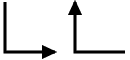
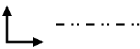
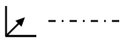
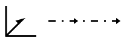

Glide Planes (a, b, c, n, d)
Return link to the symbol table

The symbols above show glide planes parallel to the plane of the screen,
the arrow indicating the glide direction.
(Note that for non-orthogonal axes, the angle formed by the symbol
is the same as the cell angle rather than 90°.)
When present, these symbols are shown at the bottom left-hand corner of the
space-group diagram.
A fractional value next to the symbol indicates the height of the glide
above the XY plane.
The written symbols for glide planes, "a", "b", and "c",
indicate the glide direction.
An a-glide plane perpendicular to the c-axis
and passing through the origin, i.e. the plane x,y,0 with
a translation 1/2 along a, will have
the corresponding symmetry operator 1/2+x,y,-z.
The symbols shown above correspond to glide planes perpendicular to the plane
of the screen with their normals perpendicular to the dashed/dotted lines.
Dashed lines indicate that the glide is parallel to the plane of the screen and
along the line while dotted lines indicate that the glide is perpendicular
to the plane of the screen.
Thus a space-group diagram for an ab-plane projection
will show a c-glide plane perpendicular to the b-axis
as a dotted line.
If the plane passes through the origin, i.e. the plane is x,0,z,
then the corresponding symmetry operator is x,-y,1/2+z.

In A-, B-, C-, and F-centred space groups, the combination of a centred
lattice with a glide plane can lead to a situation where the glide direction
exists as one of two possible directions, e.g. a plane perpendicular to
say the c-axis may be either an a- or
a b-glide plane.
This situation is shown by the symbols above for planes parallel
and perpendicular to the plane of the screen, respectively.
Note the difference between the dashed and double-dotted lines (indicating
either dashed or dotted for the glide direction)
with the dashed-dotted line described below.

The dashed-dotted line shown on the above right indicates a
glide plane perpendicular to the XY plane where the
glide direction is simultaneously both parallel and perpendicular
to the XY plane (in contrast to the dashed double-dotted line
described previously). Thus the glide is in a diagonal direction.
The equivalent diagonal-glide plane parallel to the plane of the screen
is shown in the above left-hand symbol.
Where the translation is 1/2 along each axis direction, the plane is given the
written symbol "n".
An n-glide plane perpendicular to the c-axis
and passing through the origin, i.e. the plane x,y,0 with
translations 1/2 along both a and b, will have
the corresponding symmetry operator 1/2+x,1/2+y,-z.

A dashed-dotted line with arrows shown on the above right indicates a
glide plane perpendicular to the XY plane where the
glide direction is simultaneously both parallel and perpendicular
to the XY plane, but with a translation only half that of the
n-glide plane describe previously. The sense of the translation
is indicated by the arrows.
The equivalent d-glide plane parallel to the plane of the screen
is shown in the above left-hand symbol. (Note the non-conventional use
of a half-arrow!). In this case, the sense of the translation is
in the direction of the arrow and along the positive Z direction.
The presence of a d-glide plane automatically
implies a centred lattice.
© Copyright 1997-1999.
Birkbeck College, University of London.